石正丽：没料到SARS样冠状病毒跨种感染会发生在武汉
原文链接 备份链接 【财新网】（实习记者 邓睦申 记者 杨睿）“2018年时我曾判断，蝙蝠SARS样冠状病毒跨种感染将是个大概率事件，但我没想到它就发生在2019年底，就发生在我生活的城市（武汉）。”3月9日晚，中国科学院武汉病毒研究所研 …
国际疫情扩散的档口上，继韩国囤辣酱，意大利人囤意大利面后，最先开始囤卫生纸的日本又有了新动作。
有消息称，日本方面已经开始囤墓碑了。
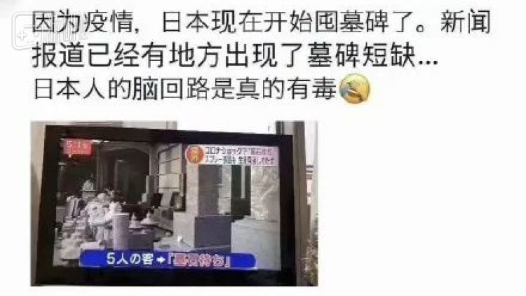
囤墓碑这样的说法乍一听似乎有夸张之嫌，但这个信息来源出于朝日新闻的消息，显然不会是无中生有。能让墓碑行业陷入困境的原因只有一种，就是作为原材料的花岗岩石料供应不足。巧的是，就是因为一些阴差阳错的事故，让日本的花岗岩石料几乎一夜之间陷入了内外交困的局面。
一切的缘起，都要从一则营销号的文章说起。
“花岗岩可以治疗新冠肺炎”
趁着时下的“热点”，为了贩卖自家含有花岗石成分的产品，日本一家三流营销号不嫌事大地放出消息称：花岗岩可以治疗新冠肺炎。
他们这里的说辞是——
绳文时代，有一股文明专门用花岗岩为老百姓治病，为花岗岩的神秘性打下基础；再到几十年前，某某某科学家意外地发现了花岗岩的奇效；最后结合实事，用一堆看不懂的科学名词告诉你花岗岩石如何消灭新冠病毒的。
——瞧瞧这个带节奏的套路，国内观众早就再熟悉不过了，鉴于这篇文章实在太长，就翻译第一句话吧：
“作为新冠病毒的治疗对策，我推荐花岗岩。”
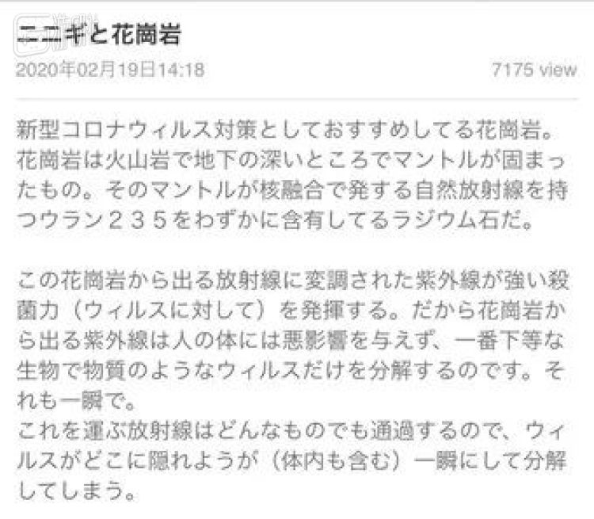
其中提到的治疗原理，简言之就是：
花岗岩可以释放出一种，特殊的紫外线，可以精准杀死新冠病毒的同时，还不会对人体产生任何损害。
“花岗岩杀病毒”正常人看来是天方夜谭，而被营销号荼毒多年的国内观众来说，这种哗众取宠的套路甚至早就没什么新意了。但是在日本，这个营销号的半处女地，杀伤力依然强大。
就这么一个不留神，夹杂着对新冠病毒的恐慌情绪，日本老百姓之间突然爆发了一波抢墓碑原料“花岗岩”的风潮。一时间，许多电商平台的花岗岩石料瞬间售空：
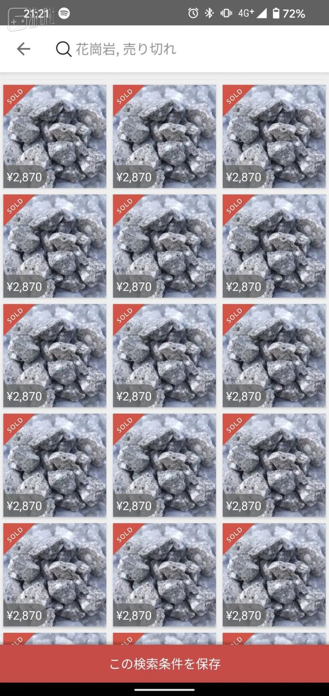
富士电视台旗下的FNN一看势头不对，赶紧在3月3日以 ｢花岗岩高价售卖，网传‘对新冠病毒有奇效’——形成新型冠状骚动｣ 为标题对该事件进行了报导：
里面显示对对日本老百姓抢花岗岩的事态其进行了说明，比如援引了一些推特发言：
现在河边上都捡不到花岗岩了！！
走啊，咱上多摩川捡花岗岩去啊。
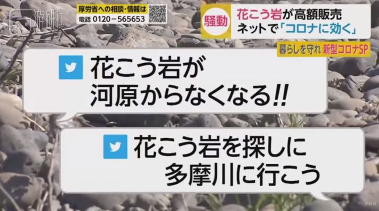
还采访了普通民众对此事的看法：
路人：“知道知道，我看Mercari上有卖的，还寻思啊咋还卖石头呢。”
记者：“然后你就买了点？”
路人：“哈哈没买，咱又不懂。”
（注：Mercari，日本C2C二手交易平台，可以理解为国外的闲鱼）
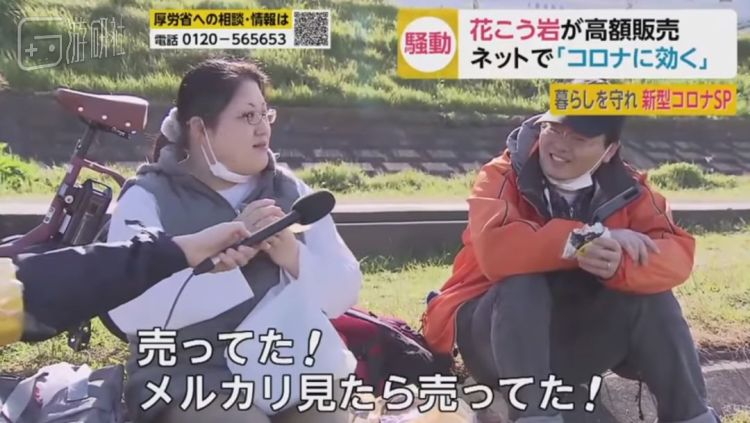
最后报道中苦口婆心地告诉观众：这玩意初中课本上就说了，什么效果都没有；甚至还搬出了各种科研机构的研究报告，对花岗石消灭新冠病毒可行性进行了全面否定。
紧随其后的，雅虎等新闻网站也对“花岗岩疗法”进行了辟谣，大意是“谨防谣言，无科学根据”。
但理性辟谣的新闻，跟跌宕起伏的营销号故事想比，效果杯水车薪。
先看日本最主流的搜索引擎吧，雅虎搜索的联想里，花岗岩有关的词条已经全数沦陷：
再看电商平台。日本的Mercari上，大大小小的花岗岩商品还是出于几乎全面售罄的状况。
到这个时候，一份河边上就能捡到的花岗岩石头，最贵的已经被炒到了12000日元，折合人民币约800元。
另一边，推特上，身为抢花岗岩的民众的同胞日本网友们也气乐了，他们一边大呼荒唐， 一边……不忘了传统艺能“玩梗”。
一家眼镜店老板“執事眼鏡ツネタ社長”趁机让自家产品搭便车：
我们这款花岗石太阳镜，不仅能防止眼部飞沫传染，目光所及之处还能直接杀死新冠病毒（误）。
而家里曾经保有花岗石相关产品的网友，此时翻出那些老掉牙的古董时更是如获至宝，一个个跑出来炫耀：
听说花岗岩对新冠病毒有奇效，我预感到我的FM77AV40SX要涨价了。↓
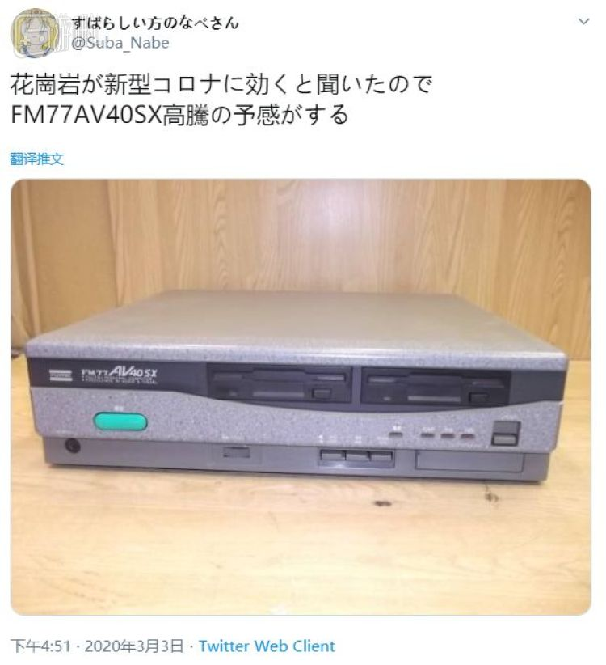（注：FM77AV40SX这款富士通的电脑因采用灰黑配色，被圈内人戏称为“墓碑PC”）
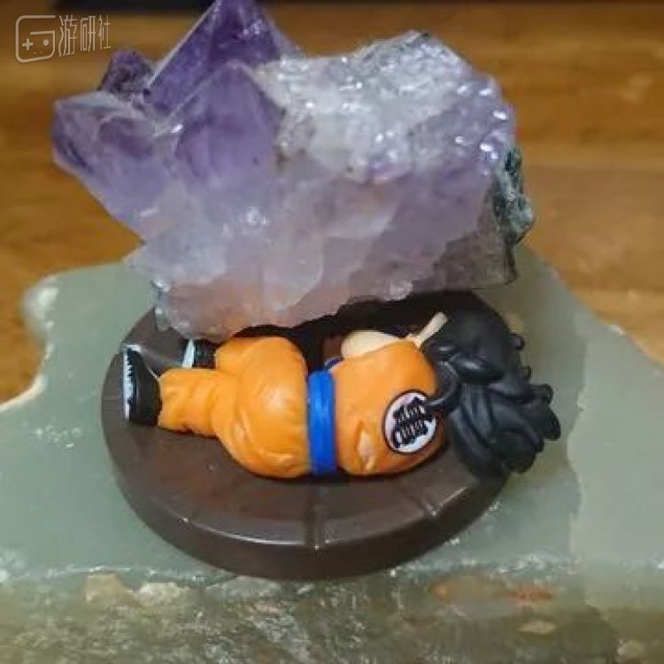“虽然没有花岗岩，但我感觉自家的紫晶石还能勉强对付一下——SweetchesP@twi”
 “跟花岗岩有关的东西，家里只剩下这个了——akimogumogu@twi”
“跟花岗岩有关的东西，家里只剩下这个了——akimogumogu@twi”
而且即便是家里实在翻不出花岗岩，老百姓们还能找到办法诉诸于虚拟世界，想方设法捣腾出花岗岩来自救。
这其中，盛产“花岗岩”的《我的世界》就是一个很好的“挖矿”途径。物资抢手到这种程度，商业头脑过人的一些玩家，甚至已经抢先一步在二手网站把自己多余的花岗岩材料上架了：
 “成色：有轻微擦痕”
“成色：有轻微擦痕”
卖不卖得出去另说，至少能秀了一波自己的“资产实力”。
雪上加霜的日本墓碑行业
在日本，人死后有立花岗岩墓碑的习俗。
因为这次的抢花岗岩风暴的爆发，让一些人自然而然地想到了最丰富的花岗岩聚集地——墓地。本来，他们也就是想借此对“抢花岗岩”的迷惑行为做一下吐槽：
这么想要花岗岩的话，死了之后就能过着被花岗岩环绕的生活了（指墓碑）
但，也许这位小姐姐不知道的是，照他们同胞对花岗岩的这个抢法，今后这个智商可能也就用不到墓碑了。
就像另个一位朋友担忧的那样：
我看FNN新闻上都报高价贩卖花岗岩的事了，这玩意要是引发盗墓者的横行可咋整啊。
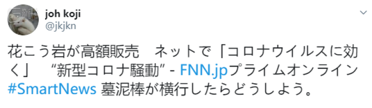“墓碑流”的盗墓，光是听听就觉得魔幻
还真让他们说着了，因为花岗岩的“被抢”，最直接受到冲击的，就是日本的墓碑行业。
开头提到的“囤墓碑”传闻的来源出自朝日新闻2月28日的报导。因墓碑供应不足问题接受采访的是武蔵石材店。
这是一家服务于东京都内的大型墓碑店，现任社长是创始人的孙子——用他们官网上的说法，就是“三代目”井冈进。武蔵石材店的网站宣传页面上，自己墓碑生意一直不错的三代目笑得还挺灿烂的：
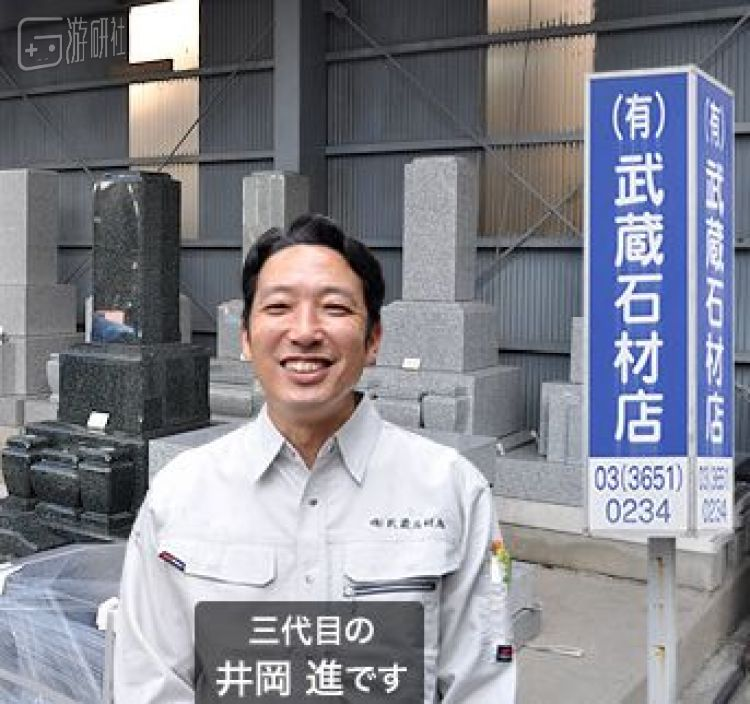平时的墓碑·三代目
但现在，面对朝日新闻记者，采访中的三代目面露难色，语调中还带着哭腔：
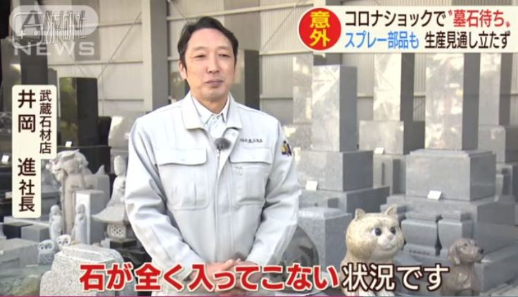疫情下的墓碑·三代目
三代目指的“进不来”，是指日本所用的花岗岩石材，70-80%都是源于中国进口。因为疫情原因，中国方面的原料输送几乎停滞了。
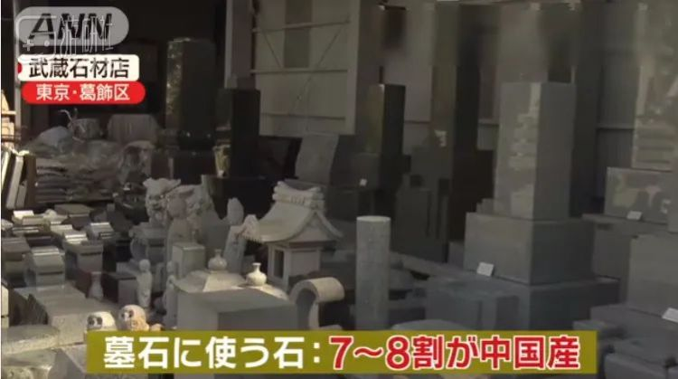
当然，“70-80%”这个数据的另一方面，也意味着至少还有两成多的花岗岩产能，是可以靠日本国内自己消化的。
这为数不多的自主花岗岩产能，对墓碑行业来说总算是不幸中的万幸了。
但是！就是因为日本老百姓盲目地争抢花岗岩，这一下子把日本国内的石料路子也给断了。而且墓碑行业还不像电子产品、生活用品这种，要么供应商有一定的备货，要么老百姓忍一忍就过去了。
但墓碑不行，来一个就是绝对的刚需。
那么现在紧缺状态到了哪个阶段了呢？2月28日报道中显示，已经有5个客人正在等自己的墓碑到货：
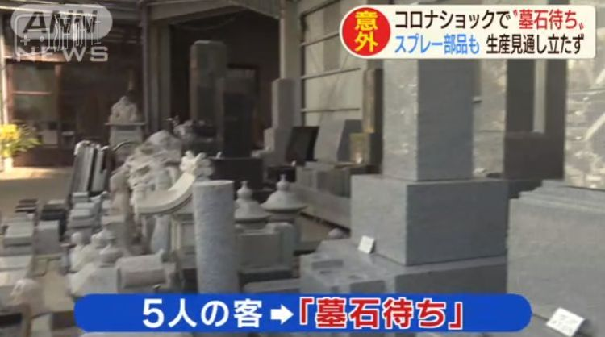
这也意味着之前的库存已经几乎消耗殆尽。且只要疫情一天不结束，这个墓碑的缺口就会越拉越大。
但事情发展到这个时候， 墓碑店老板们已经有劲也使不出了。
*本文原载于公众号“地球人研究报告”，游研社获授权转载。
原文链接 备份链接 【财新网】（实习记者 邓睦申 记者 杨睿）“2018年时我曾判断，蝙蝠SARS样冠状病毒跨种感染将是个大概率事件，但我没想到它就发生在2019年底，就发生在我生活的城市（武汉）。”3月9日晚，中国科学院武汉病毒研究所研 …
原文链接 备份链接 【财新网】（实习记者 黄晏浩 记者 徐路易）新冠病毒又一项“特殊性”在自然界中找到了类似物。3月6日，一篇发表在bioRxiv预印本网站的论文称，S蛋白两个亚基S1和S2间的蛋白酶切位点有多个氨基酸插入，并非新冠病毒独 …
原文链接 备份链接 【财新网】（记者 赵宁 福林）新冠病毒是否能侵袭神经系统，引起患者脑损害问题继续受到关注。近日，首都医科大学附属北京地坛医院（下称地坛医院）披露，一例新冠肺炎确诊病例脑脊液中检测出新冠病毒，临床诊断为病毒性脑炎。这为新 …
原文链接 备份链接 澎湃新闻记者 南博一 为遏制新冠病毒的传播，3月8日，意大利封锁了该国北部的伦巴第大区和11个邻近省份，1600万人的自由流动受到影响，封锁将一直持续到4月3日。 “我们面临着一个紧急情况，一个全国性的紧急情况，” …
原文链接 备份链接 【财新网】（驻东京记者 陈立雄）3月9日，受新冠疫情对全球市场信心带来的冲击，日经指数大跌1050.99点，跌幅达5.07%，收于19698.76点，达1年2个月以来的新低，还跌破了2万元的关卡。日经盘中最多一度下跌 …